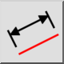
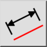
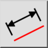
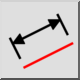

Tilpasset
Værktøjslinje/ikon:
 

Menu: Dimension > Tilpasset
Genvej: D, A
Kommandoer: dimaligned | da
Dette er en automatisk oversættelse.
Værktøjslinje/ikon:
 

Menu: Dimension > Tilpasset
Genvej: D, A
Kommandoer: dimaligned | da
Opretter tilpassede dimensioner. Justerede dimensioner måler normalt længden
af en eksisterende linje. Dimensionslinjen er altid parallel med linjen mellem
de to valgte punkter 1. og 2.